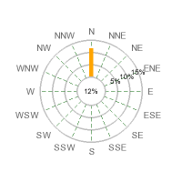
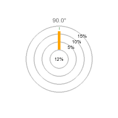

風配図プロットには以下の２つの基本タイプがあります。
コンパス・タイプの風配図プロットでは、コンパス方位の軸数は16本、8本、４本の中から選べます。入力データの方位はプロット内のコンパス方位軸の1本ごとに限定されます。方位は方位軸の番号で特定します。
方位軸のラベルの初期設定はコンパス方位の短縮形です。例えば「E」「N」「W」「S」。コンパス方位の初期設定名の変更の仕方はこれによりご想像がつくと思いますが、東、つまり3時の方位から時計と反対回りに番号がついています。
フリー・ライプの風配図プロットは事前に設定された方位軸はありません。入力データのディレクション定数で任意の角度が設定できます。（例えば「NW」などのように指定できます。方位ゼロは東、つまり3時の方角です。
プロット・タイプは次の方法で指定します。
下図2.2_1から2.2_4は基本となるタイプ別風配図プロットを表しています。
| 図2.2_1 WINDROSE_TYPE4 | 図2.2_2 WINDROSE_TYPE8 |
|---|---|
| 図2.2_3 WINDROSE_TYPE16 | 図2.2_4 WINDROSE_TYPEFREE |
次のコードでは16軸のコンパス方位がある風配図を指定しています。
<?php
$wp = new WindrosePlot($data);
$wp->SetType(WINDROSE_TYPE16);
?>
入力データでタイプを指定：
入力データは配列の形をとります。配列関数への入力がそれぞれ一方位に対するデータを表す配列となります。入力データはある方位とバケットに属する全データに対するパーセント数と解釈します。つまり、すべての方位に対するすべての入力値の合計は100以下であることになります。データが損失した場合は100未満になります。
最初のバケット、「バケット0(ゼロ)」は0値、即ちデータのその部分は計測無し（または無風状態）を指定します。無風状態では方位も存在しないため、バケット0はすべて内側の円にまとめて表示されます。
凡例に表示される初期設定の各バケット境界値は次の通りです。
0-1, 1-2, 2-3, 3-5, 5-6, 6-10, 10-13.5, 13-99
0-1, 1-2, 2-3, 3-5, 5-6, 6-10, 10-13, 13-99
最初の要素「0-1」は0から1示度数のパーセント値を指定しており、風配図プロットの中心に置かれます。次の要素「1-2」は１から２パーセントの測定値、「2-3」は２から３パーセントの測定値…となります。
方位はその要素を特定するカギとなります。方位の特定方法は次のいずれかで行います。
$data = array ( array('E' => <east_bucket0>,<east_bucket1> ... <east_bucketN> ),
array('ESE' => <eastsoutheast_bucket0>, ... <eastsoutheast_bucketN> ),
....
array('NE' => <northeast_bucket0>, ... <northeast_bucketN> ),
array('ENE' => <eastnortheast_bucket0>, ... <eastnortheast_bucketN> ));
$data = array ( array(0 => <east_bucket0>,<east_bucket1> ... <east_bucketN> ),
array(1 => <eastsoutheast_bucket0>, ... <eastsoutheast_bucketN> ),
....
array(2 => <northeast_bucket0>, ... <northeast_bucketN> ),
array(3 => <eastnortheast_bucket0>, ... <eastnortheast_bucketN> )); $data = array ( array('12.5' => <bucket0>,<bucket1> ... <bucketN> ),
array('22.1' => <bucket0>, ... <bucketN> ),
同じデータセットの中ではスタイルを混合することも可能です。
通常のコンパス方位風配図プロットを使用中に表示できない角度を指定するとそれを知らせるエラーメッセージが出ます。
この機能がどう働くかを下記の例で説明します。
例2.2_1 通常の風配図コンパス方位での入力データの例
(16本の軸がすべて表示されていると仮定。)
$data = array( 'N' => array(2,5,6) ); このデータ配列では「北」という１つの方位のみ指定しており、バケット値の範囲が0では2％、0〜1では5％、1〜2では6％を表します。
(16本の軸がすべて表示されていると仮定。)
$data = array( 1 => array(2,5,6), 3 => array(6,3), 'NW' => array(3,2,2,2) )
このデータ配列では３つの方位を指定しています。ご覧のように、方位を示す軸番号や「NW」のような方位名を混合させることが可能です。しかし同時に使用するときはひとつの方法に決めておくほうが明確でいいでしょう。
例2.2_2 フリー風配図プロット用の入力データ例
フリータイプの特別な点は16本のコンパス方位に限らず任意の方位を指定できることです。
$data = array( 10 => array(2,5,6), 24 => array(6,3), 137 => array(3,2,2,2) )
このデータ配列では、10度、24度、137度の3つの方位のバケットの数値を指定しています。
$data = array( '21. 5' => array(2,5,6), 'N' => array(6,3), 137 => array(3,2,2,2) ) このデータ配列は、21.5度、「北」（90度）、137度の3方位の測定値を指定しています。分数になりそうな数値を持つ角度であれば「21.5」のようにString値として扱われる角度を指定します。それによってライブラリが自動的に適切に取り扱います。